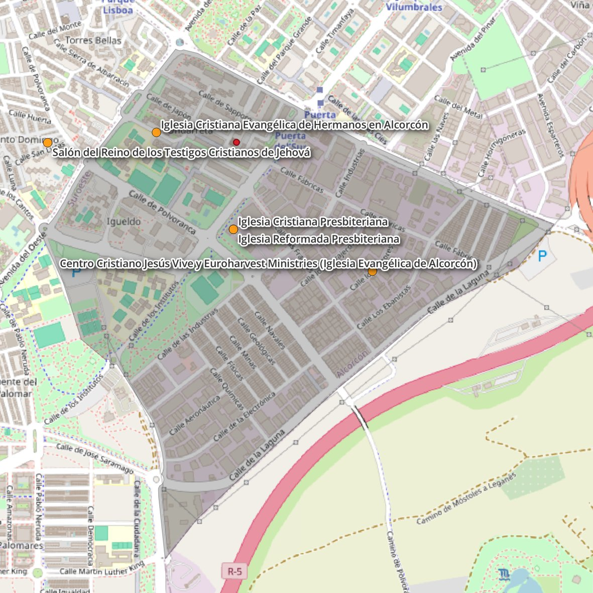
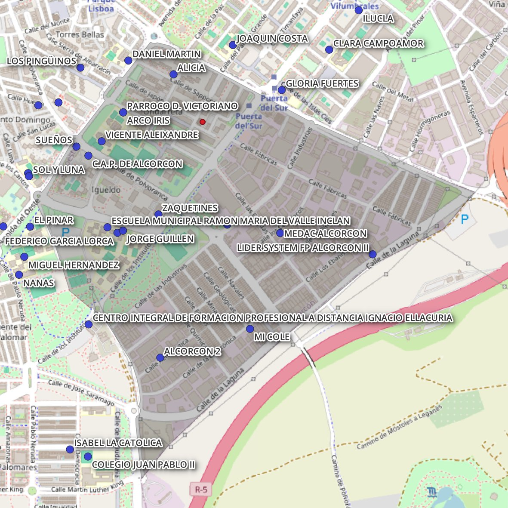

Puntos de interés en el territorio parroquial
Parroquia Santa Sofía (Alcorcón) · Arciprestazgo de Alcorcón
Entidades religiosas no católicas

4 entidades religiosas no católicas en el territorio de la parroquia.
Evangélicos (4)
- Centro Cristiano Jesús Vive y Euroharvest Ministries (Iglesia Evangélica de Alcorcón)Calle los Pintores 17, Alcorcón
- Iglesia Cristiana Evangélica de Hermanos en AlcorcónCalle Olímpica Conchita Puig 4 Bajo, Alcorcón
- Iglesia Cristiana PresbiterianaCalle Polvoranca 39 Local 3, Alcorcón
- Iglesia Reformada PresbiterianaCalle Polvoranca 39 Local 3, Entrada peatonal por Calle Olímpico Francisco Fernández Ochoa, Alcorcón
Fuente: Registro de Entidades Religiosas del Ministerio de la Presidencia, Justicia y Relaciones con las Cortes. Situación en el mapa: dirección geocodificada con CartoCiudad (IGN) o Nominatim (OpenStreetMap).
Centros educativos

11 centros educativos en el territorio de la parroquia (público: 8, privado: 2, privado concertado: 1).
| Centro | Tipo | Titularidad | Domicilio | Web |
|---|---|---|---|---|
| ARCO IRIS | Escuela infantil-casa de niños | Público | Calle de la Olímpica Conchita Puig, 2, 28923 Alcorcón | Página web |
| CENTRO DE FORMACION EN PROFESIONES BIOSANITARIAS HM HOSPITALES | Centro privado de formación profesional específica | Privado concertado | Calle Industrias, 12, 28923 Alcorcón | |
| ESCUELA MUNICIPAL RAMON MARIA DEL VALLE INCLAN | Escuela municipal de educación de personas adultas | Público | Calle del Olímpico Francisco Fernández Ochoa, 4, 28922 Alcorcón | Página web |
| FEDERICO GARCIA LORCA | Colegio de educación infantil y primaria | Público | Calle del Olímpico Francisco Fernández Ochoa, 6, 28923 Alcorcón | Página web |
| JORGE GUILLEN | Instituto de educación secundaria | Público | Calle Olimpico Fernandez Ochoa, s/n, 28923 Alcorcón | Página web |
| LIDER SYSTEM FP ALCORCON II | Centro privado de formación profesional específica | Privado | Calle de la Laguna, 10, 28923 Alcorcón | |
| MEDAC ALCORCON | Centro privado de formación profesional específica | Privado | Calle los Cerrajeros, 11, 28923 Alcorcón | Página web |
| PARROCO D. VICTORIANO | Colegio de educación infantil y primaria | Público | Calle de la Olímpica Conchita Puig, 2, 28923 Alcorcón | Página web |
| SUEÑOS | Escuela infantil | Público | Avenida del Alcalde José Aranda, s/n, 28923 Alcorcón | Página web |
| SUR-12, ALCORCON | Zona casas de niños | Público | Calle de la Olímpica Conchita Puig, 2, 28923 Alcorcón | Página web |
| VICENTE ALEIXANDRE | Colegio de educación infantil y primaria | Público | Calle de Polvoranca, 35, 28923 Alcorcón | Página web |
Fuente: registro de centros educativos de la Comunidad de Madrid. Solo se recogen los centros de alta.